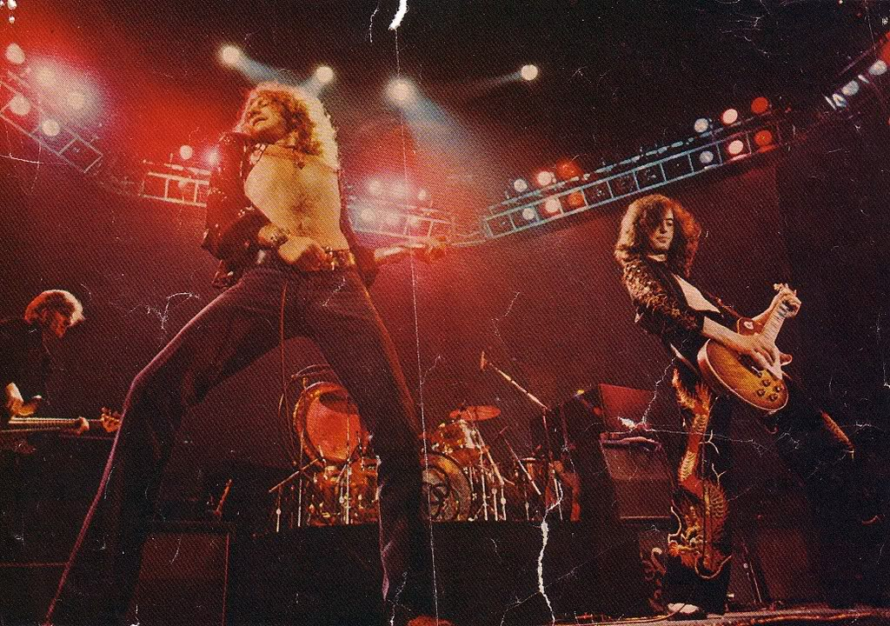

Learn to Rock Blocks, Procs, and Lambdas
DECEMBER 5, 2014
This week we started learning more about Object Oriented Design, which is basically a fancy way of saying "making your code as easily changeable and simple as possible". Now that we're all on the same page, please enjoy this Led Zeppelin while we Proc n roll!
Blocks
By now, we've seen a lot of blocks. They are always surrounded by do...end or {}. We can call various methods on block like .each, .collect, .times etc. like this:
["Led Zeppelin", "AC/DC", "The Rolling Stones"].each { |band| puts band }
# =>Led Zeppelin
AC/DC
The Rolling Stones
There's just one lil issue regarding blocks...and it may blow your mind since we've all been told "EVERYTHING IN RUBY IS AN OBJECT!" It turns out, this is a lie. Blocks are NOT objects!!! *gasp* But here's where procs and lambdas come in.
Procs
Procs are objects. They are essentially saved blocks. This means they can be called over and over without actually having to be rewritten. For example:
print_bands = Proc.new { |band| puts band }
["Led Zeppelin", "AC/DC", "The Rolling Stones"].each(&print_bands)
#=> Led Zeppelin
AC/DC
The Rolling Stones
There's just one lil issue regarding blocks...and it may blow your mind since we've all been told "EVERYTHING IN RUBY IS AN OBJECT!" It turns out, this is a slight lie. Blocks are NOT objects!!! *gasp* But here's where procs and lambdas come in.
Lambdas
Like procs, lambdas are also objects. In fact, they are ALMOST identical to procs. You can create them the same way your create procs, like this:
print_bands = lambda { |band| puts band }
["Led Zeppelin", "AC/DC", "The Rolling Stones"].each(&print_bands)
#=> Led Zeppelin
AC/DC
The Rolling Stones
But there are a couple differences between procs and lambdas.
- A lamda checks the number of arguments passed to it, unlike a proc. This means that a lambda will throw an error if you pass the wrong number of arguments, whereas a proc will assign nil to any missing arguments.
- When a lambda returns, it passes control back ot the calling method, but proc returns without going back to the calling method. For example:
#PROC EXAMPLE def band_selector best_band = Proc.new { puts "Led Zeppelin is the best!" } best_band.call puts "AC/DC is the best!" end #=> "Led Zeppelin is the best!" #LAMBDA EXAMPLE def band_selector best_band = lambda { puts "Led Zeppelin is the best!" } best_band.call puts "AC/DC is the best!" end #=> "AC/DC is the best!"
See how proc just returned itself, while lambda returned the method call?
Procs and lambdas can help our code stay as DRY as possible, which is why they can help with OOD!
Fun Fact: You dont need a method to call a proc or a lambda. While it won't return anything in this instance, you can call the proc/lambda itself, like this:
print_bands = Proc.new { |band| puts band }
print_bands.call
print_bands = Proc.new { |band| puts band }
print_bands.call
Now you're ready to go out there and rock or proc or block or lambda (even though that doesn't rhyme with rock) out!